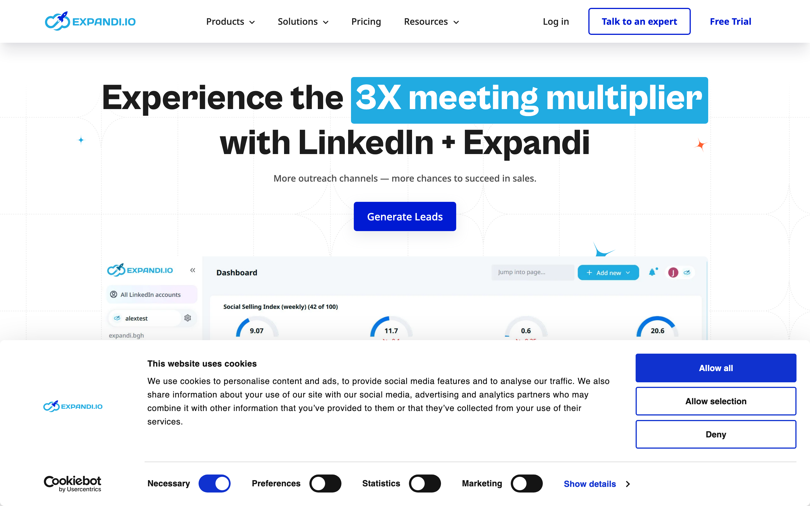
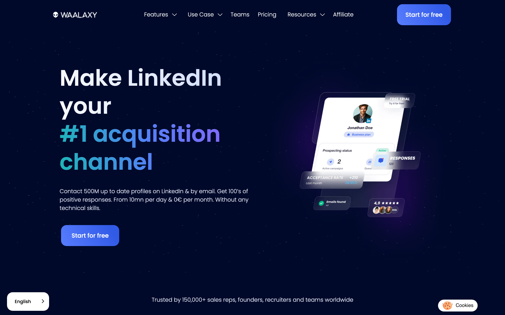
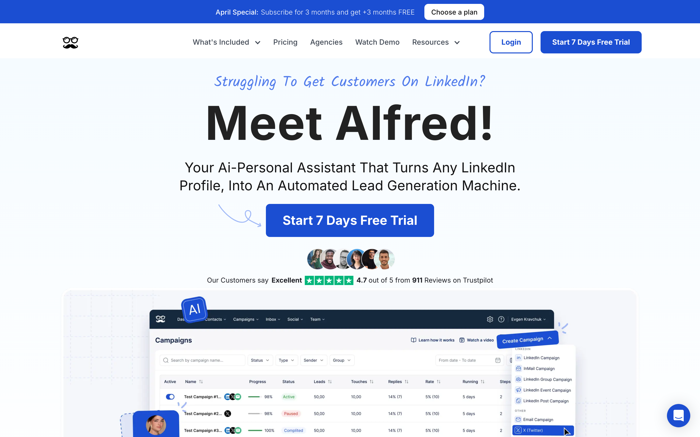
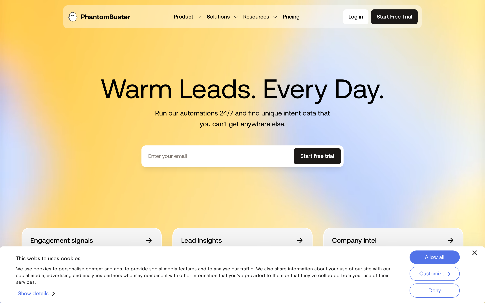

The best LinkedIn automation tools in 2026 are Overloop AI, Expandi, Dripify, Waalaxy, Meet Alfred, PhantomBuster, and TexAu. They automate connection requests, follow-up messages, and multichannel sequences (LinkedIn + email) so your outreach runs consistently without manual work. Pricing ranges from free (Waalaxy) to $99/seat/month (Expandi), and the safest tools enforce 20-40 daily connection requests with randomized delays to avoid account restrictions.
Below we compare all 7 tools on safety controls, personalization, multichannel support, and pricing. Sequencers (Overloop AI, Expandi, Dripify, Waalaxy, Meet Alfred) handle outreach and reply management. Data automation tools (PhantomBuster, TexAu) handle list building and enrichment upstream.
Quick Comparison
| Tool | Core Use Case | Safety Controls | Personalization | Multichannel | Starting Price |
|---|---|---|---|---|---|
| Overloop AI | Lead sourcing (450M+ contacts) + AI-written outreach | Pacing controls, step timing, throttling | AI personalization using prospect context | LinkedIn + email | $49/mo |
| Expandi | Structured LinkedIn outbound for teams | Daily limits, randomized delays, safety settings | Dynamic placeholders, image personalization | LinkedIn-focused | $99/seat/mo |
| Dripify | SDR-style LinkedIn sequences with analytics | Rate limits, working hours, action caps | Templates + variables, conditional steps | LinkedIn-focused | $39/mo |
| Waalaxy | Simple LinkedIn + email campaigns for SMBs | Quotas, sending windows, warm-up pacing | Variables, message templates | LinkedIn + email | Free tier |
| Meet Alfred | Multichannel outreach for agencies | Daily limits, delays, schedule controls | Templates + variables, follow-up logic | LinkedIn + email + X | $59/mo |
| PhantomBuster | Data extraction and task automation | Scheduling, throttling per Phantom, proxies | Outputs data for downstream tools | LinkedIn + web sources | $69/mo |
| TexAu | Automation recipes for growth ops | Scheduling, rate limits, proxy support | Workflow-driven, pushes to CRMs | LinkedIn + web | $79/mo |
Note on pricing: vendors change plans frequently and pricing varies by seats, limits, and add-ons. Check each tool's pricing page before you commit.
In practice, sequencers like Expandi, Dripify, Waalaxy, Meet Alfred, and Overloop AI fit teams that want repeatable outreach. PhantomBuster and TexAu fit teams that need LinkedIn data collection or cross-site automation, then route that data into a sequencer or a CRM.
1 Overloop AI

Overloop AI combines a 450M+ B2B contact database, AI-written personalization, LinkedIn automation, and deliverability-focused email sending in one platform. Pricing starts at $49/month. It replaces the typical 3-tool stack (data provider + email platform + LinkedIn sequencer) with a single workflow from ICP definition to booked meeting.
The biggest advantage is speed from ICP to launch. You define filters (industry, role, company size, location), build a verified list, then push prospects into multichannel sequences that mix LinkedIn touches with email steps. Teams typically launch a first campaign within 5 minutes of signing up.
What Overloop AI Does Best
Overloop AI focuses on personalization that stays grounded in real context. Instead of blasting a template with {FirstName} tokens, you can generate custom lines based on a prospect's company and public web signals, then keep the rest of the message consistent with your tone of voice.
- Lead sourcing: build targeted lists without exporting and re-importing CSVs all day.
- Email deliverability support: verification plus sending practices designed for cold outreach.
- AI personalization: generate relevant first lines and keep brand voice consistent.
- LinkedIn + email sequences: coordinate steps so prospects see you in more than one channel.
Reporting tracks core campaign outcomes (opens, clicks, replies, bounces, out-of-office) so you can diagnose whether the problem is targeting, deliverability, or messaging.
If your main need is scraping or extracting LinkedIn data at scale, PhantomBuster or TexAu usually fits better. If your goal is meetings from a repeatable outbound engine, Overloop AI is built for that path.
2 Expandi

Expandi is a cloud-based LinkedIn outreach tool built for teams that want predictable, structured sequences without running a browser extension all day. You connect a LinkedIn account, define working hours and limits, then let Expandi execute the steps on a schedule.
Expandi fits best when you already have a clear ICP and list source, and you want consistent follow-up logic across multiple reps.
Campaign Logic And Personalization
Expandi centers on sequence building: connection requests, message follow-ups, and branching based on what the prospect does. You can build "if accepted, send message A," "if no reply after X days, send message B," and stop sequences when a prospect replies.
On personalization, Expandi supports dynamic placeholders (first name, company, job title) and richer touches like image personalization.
Safety Controls Teams Actually Use
Expandi's safety story is mostly about pacing and consistency. You set daily limits, randomized delays, and activity windows so actions occur during realistic hours in the account's time zone.
Teams also like Expandi because it standardizes guardrails across seats. Managers can enforce conservative limits, keep campaigns consistent, and reduce the "one rep went rogue" problem that gets accounts restricted.
Expandi stays LinkedIn-first. If you want LinkedIn plus deliverability-managed email steps in the same sequence, a multichannel sequencer like Overloop AI is often simpler than stitching together Expandi with separate email infrastructure.
3 Dripify
If you want LinkedIn-first sequencing with a clear SDR workflow, Dripify is built for that job. It automates profile visits, connection requests, follow-ups, and conditional next steps so reps run consistent outbound without manually tracking who accepted and who needs a nudge.
Dripify works best when you already have a lead source. Many teams feed it lists from LinkedIn Sales Navigator searches, CSV exports, or a CRM like HubSpot.
What Dripify Gets Right for SDR Teams
- Sequence builder with branching: create "if accepted, send X" and "if no response, wait then send Y" logic so reps stop babysitting threads.
- Team collaboration: manage multiple seats, keep campaigns consistent, and reduce copy drift across reps.
- Templates: start from proven sequence structures, then tune copy for your ICP and offer.
- Controls for pacing: set working hours and caps so activity stays within reasonable daily limits.
Analytics is where Dripify tends to win mindshare with outbound teams. You can monitor acceptance rates, reply rates, and step-by-step performance to see where sequences stall.
Dripify is not a data extraction tool. If you need large-scale list building, enrichment, or cross-site workflows, PhantomBuster and TexAu fit better.
4 Waalaxy

Waalaxy is for a different reality: SMB teams that want to build an audience quickly and run simple LinkedIn plus email sequences without spending weeks on ops.
It is popular with small sales teams, founders, and agencies that want a fast setup and a straightforward workflow: import leads, enroll them in a sequence, then follow up automatically.
Where Waalaxy Fits Best
Waalaxy works well for "first system" outbound. You can take a Sales Navigator search, a CSV, or a saved list, then run a multistep cadence that mixes connection requests, post-acceptance messages, and email touches.
- LinkedIn steps: profile visits, connection requests, messages, and follow-ups based on acceptance.
- Email steps: send an email when LinkedIn cannot reach the prospect.
- Light segmentation: variables and simple conditions so you do not send the same copy to every persona.
Waalaxy's limits show up when you want deeper reporting, advanced branching logic, or deliverability-heavy email operations. If email is a core channel, platforms like Overloop AI typically give you tighter control over verification, sending, and reply tracking while still coordinating LinkedIn steps.
5 Meet Alfred

Meet Alfred runs outreach sequences across LinkedIn, email, and X (Twitter), with scheduled follow-ups and team management features that fit agencies and recruiters juggling multiple pipelines.
Meet Alfred's main value is coordination. You can design a cadence where LinkedIn does the first contact, email handles longer follow-ups, and X adds a lightweight touch for prospects who are active there.
What Meet Alfred Does Well for Agencies and Recruiters
- Multichannel sequencing: build a single workflow that mixes LinkedIn steps with email and X touches.
- Follow-up automation: send timed messages based on where the prospect is in the sequence.
- Templates and variables: personalize with standard fields and keep messaging consistent across client accounts.
- Team features: manage multiple users and campaigns for separate offers, ICPs, and sender accounts.
Where Meet Alfred can feel lighter is deliverability-heavy email operations and deep reporting. If email deliverability is a primary constraint, you may prefer a platform that treats verification, inbox health, and reply tracking as first-class features. Overloop AI pairs LinkedIn steps with deliverability-focused email sending and reporting.
6 PhantomBuster

PhantomBuster is an automation platform built around "Phantoms," single-purpose automations you chain together. Think of it as building blocks for growth ops: one Phantom collects profiles, another enriches them, a third exports to Google Sheets, and a fourth pushes rows into a CRM via Zapier or an API.
Common PhantomBuster LinkedIn Phantoms
- Search and list extraction: pull results from LinkedIn searches or Sales Navigator searches into structured rows.
- Profile enrichment: take a list of LinkedIn profile URLs and extract fields (headline, company, location) for segmentation.
- Engagement and light actions: automate smaller tasks like profile visits or following profiles as a warm-up step.
- Messaging support workflows: prepare lead lists and custom variables that you later feed into a sequencer.
PhantomBuster is a better pick than a sequencer when you need to build lists at scale, want repeatable enrichment, or run cross-site workflows.
If your goal is booking meetings, most teams use PhantomBuster upstream for list building and enrichment, then hand clean data into a sequencer or a platform like Overloop AI that coordinates LinkedIn steps with deliverability-managed email.
7 TexAu
TexAu is a cloud automation platform that runs repeatable "recipes" across LinkedIn and dozens of other sites, then pushes the output into tools like Google Sheets, Airtable, HubSpot, or Zapier.
TexAu is most useful upstream of outreach. You use it to collect, clean, and route prospect data, then hand that data to a sequencer or a multichannel platform to run paced LinkedIn and email steps.
What TexAu Is Good At
- Automation recipes: run LinkedIn tasks and combine them with web automations like scraping websites for firmographic signals.
- Data workflows: write results to Google Sheets or Airtable, then dedupe, score, and segment before outreach.
- Integrations: connect workflows through Zapier or send data into CRMs like HubSpot and Salesforce.
TexAu also works well when LinkedIn is only one step. Recruiting teams may pull candidates from LinkedIn, enrich with GitHub activity, then route the list into an ATS. Agencies often build client-specific data pipelines, then reuse them across accounts.
If your end goal is meetings, keep TexAu focused on list building and enrichment, then run conservative, human-paced outreach in a dedicated sequencer where messaging, stopping rules, and reply handling are the main product.
LinkedIn Automation Safety Limits in 2026
LinkedIn's detection system flags accounts based on volume, timing patterns, and behavioral fingerprints. Safe daily limits in 2026:
- Connection requests: 20-40 per day. New accounts should start at 10-15 and ramp over 2-3 weeks.
- Messages: 30-60 per day to existing connections.
- Total actions: 80-150 per day (profile visits + requests + messages combined).
- Acceptance rate: keep above 30%. Below that, LinkedIn flags your account for review.
- Working hours: send actions only during business hours in the prospect's timezone. Activity at 3 AM gets flagged.
Cloud-based tools (Overloop AI, Expandi, Dripify) are safer than browser extensions because they use dedicated IPs and randomized delays between actions. Never run two automation tools on the same LinkedIn account simultaneously.
Frequently Asked Questions
What are the best LinkedIn automation tools in 2026?
The best LinkedIn automation tools in 2026 are Overloop AI (best all-in-one platform with 450M+ contact database, from $49/mo), Expandi (best for structured team outreach, from $99/seat/mo), Dripify (best SDR analytics, from $39/mo), Waalaxy (best for SMBs, free tier available), Meet Alfred (best multichannel with LinkedIn + email + X, from $59/mo), PhantomBuster (best for data extraction, from $69/mo), and TexAu (best for cross-site automation, from $79/mo).
Is LinkedIn automation safe in 2026?
LinkedIn automation is safe when you stay within daily limits: 20-40 connection requests, 30-60 messages, and 80-150 total actions per day. Cloud-based tools like Overloop AI or Expandi are safer than browser extensions because they use dedicated IPs and randomized delays. Start new accounts at 10-15 actions per day and ramp up over 2-3 weeks. Keep your connection acceptance rate above 30% to avoid flags.
What is the difference between a LinkedIn sequencer and a data automation tool?
LinkedIn sequencers (Overloop AI, Expandi, Dripify, Waalaxy, Meet Alfred) automate outreach: connection requests, messages, follow-ups, and reply handling. Data automation tools (PhantomBuster, TexAu) extract and enrich data: scraping profiles, building lists, and routing data to CRMs like HubSpot or Salesforce. Most teams use a data tool upstream for list building, then a sequencer for the actual outreach.
How much do LinkedIn automation tools cost?
LinkedIn automation tools range from free to $99/month per seat. Waalaxy offers a free tier with limited features. Dripify starts at $39/mo. Overloop AI starts at $49/mo and includes a 450M+ contact database plus email verification. Meet Alfred starts at $59/mo. PhantomBuster starts at $69/mo. TexAu starts at $79/mo. Expandi starts at $99/seat/mo. Most tools offer 7-14 day free trials.
Which LinkedIn automation tool is best for agencies?
For agencies managing multiple client accounts, Overloop AI and Meet Alfred are the strongest options. Overloop AI combines lead sourcing from a 450M+ database, AI personalization, and multichannel sequences (LinkedIn + email) in one platform with team management. Meet Alfred adds X (Twitter) as a third outreach channel. Expandi also works for agencies that want standardized LinkedIn-only sequences with enforced safety limits across multiple seats.
Which Tool Should You Choose?
Sequencing tools win when messaging, stop rules, and reply handling are the work. Data automation tools win when list building and enrichment are the work. Pick based on where you spend time today.
- Fewest moving parts to book meetings: Overloop AI. Lead sourcing, email verification, deliverability-focused sending, and LinkedIn + email sequences in one place.
- Structured LinkedIn motion across a team: Expandi. Consistent pacing settings, standardized sequences, LinkedIn-first.
- SDR-style playbooks and performance tracking: Dripify. Strongest when you already have lists and want clear analytics.
- Quick LinkedIn + email without heavy ops: Waalaxy. Speed to launch, simple templates, lightweight multichannel.
- Multichannel including X (Twitter): Meet Alfred. Agencies and recruiters coordinating touches across LinkedIn, email, and X.
- LinkedIn data extraction and enrichment: PhantomBuster. Use upstream to collect profiles, export, and push clean rows into your CRM.
- Broader automation recipes beyond LinkedIn: TexAu. Growth ops teams for scheduled tasks, cross-site workflows, and integrations.
Next step: pick one ICP, cap daily activity conservatively, run a 14-day test with one sequence, then judge on meetings booked per 100 prospects and account health. The tool that keeps both numbers healthy is the one you scale.